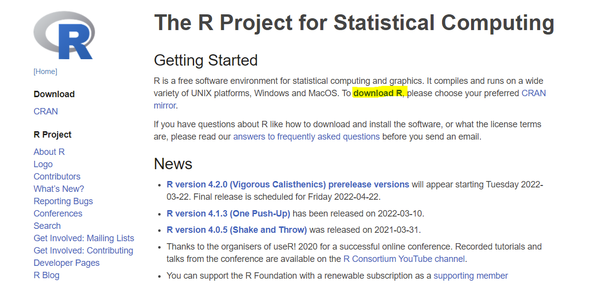
1 What is R?
R was a programming language that was designed specifically for the needs of statistics and data analysis.
-Hadley Wickham (Hermans 2021)
R is a statistical programming language used commonly for data analysis across a wide array of disciplines and industries. It’s often preferred over similar languages for it’s robust support of statistical analysis, the ease in which one is able to create beautiful graphics, and it’s open source nature amongst other reasons.
1.1 History
R was built by Ross Ihaka and Robert Gentleman at the University of Auckland and was first released in 1993.
Robert Gentleman and Ross Ihaka “both had an interest in statistical computing and saw a common need for a better software environment in [their] Macintosh teaching laboratory. [They] saw no suitable commercial environment and [they] began to experiment to see what might be involved in developing one [them]selves.” (Ihaka 1998)
While R was officially first released in 1993, it wasn’t until 1995 that Ross Ihaka and Robert Gentlemann were convinced by Martin Mächler to release the source code freely (Ihaka 1998).
1.2 Resources
- You can learn more about R here: https://www.r-project.org/
- Read Ross Ihaka’s account of R’s origination: https://www.stat.auckland.ac.nz/~ihaka/downloads/Interface98.pdf
- “What is R?”” by Microsoft: https://mran.microsoft.com/documents/what-is-r
- R manuals by the R Development Core Team: https://cran.r-project.org/manuals.html
- R-bloggers: https://www.r-bloggers.com/
- R User Groups: https://www.meetup.com/pro/r-user-groups/
- R Studio Community: https://community.rstudio.com/
- The R Journal: https://journal.r-project.org/
- Microsoft R Application Network: https://mran.microsoft.com/
2 What is Data Analysis?
I mean my definition is data science is like data analysis by programming. Which of course begs the question of what data analysis is, and so I think of data analysis as really any activity where the input is data and the output is understanding or knowledge or insights. So I think of that pretty broadly. And then to do data science you’re not doing it by pointing and clicking. You’re doing it by writing some code in a programming language.
-Hadley Wickham (Eremenko 2020)
Data analysis at it’s most simple form is the process of searching for meaning in data with the ultimate goal being to draw insight from that meaning.
2.1 The Process of Data Analysis
The process of data analysis can be generally described in six steps:
Gathering Requirements - Before one embarks on an analysis, it’s important to make sure the requirements are understood. Requirements include the questions which your stakeholders are hoping to answer as well as the technical requirements of how you are going to perform your analysis.
Data Acquisition - As you might imagine, you must acquire your data before conducting an analysis. This may be done through the methods such as manual creation of datasets, importing pre-constructed data, or leveraging APIs.
Data Preparation - Most data will not be received in the precise format you need to begin your analysis. The process of data preparation is where you will structure and add features to your data.
Developing Insights - Once your data is prepared, you can now begin to make sense of your data and develop insights about it’s meaning.
Reporting - Finally, it’s important to report on your data in such a way that the information is able to be digested by the people who need to see it when they need to see it.
Other sources may include additional steps such as “acting on the analysis”. While this is a critical step for organizations to capture the full value of their data, I would argue that it occurs outside of the analysis process.
This book will focus on the technical skills required to conduct an analysis. Because of this, we will be covering steps two through five and omitting step one.
2.2 Resources
- “Data Science & Big Data Analytics: Discovering, Analyzing, Visualizing and Presenting Data” by EMC Education Services: https://onlinelibrary.wiley.com/doi/book/10.1002/9781119183686
- “Managing the Analytics Life Cycle for Decisions at Scale” by SAS: https://www.sas.com/content/dam/SAS/en_us/doc/whitepaper1/manage-analytical-life-cycle-continuous-innovation-106179.pdf
3 Setup
This chapter will walk you through how to download the R programming language as well as R Studio which is a popular tool for interacting with the R ecosystem. Additionally, there are alternatives to R Studio listed at the end of the chapter. However, R Studio is the recommended environment for completing this book.
3.1 Install R
Before you do anything, you’ll need to download R. This download will allow your computer to interpret the R code you write later on.
Download R From R: The R Project for Statistical Computing
Select “download R”
- Choose any link but preferably the one closest to your physical location
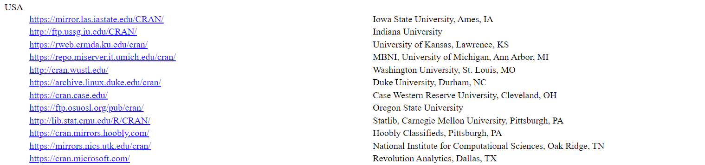
- Choose your operating system
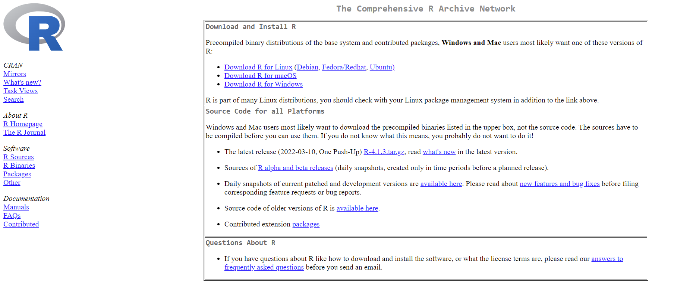
- Press “Install R for the first time”
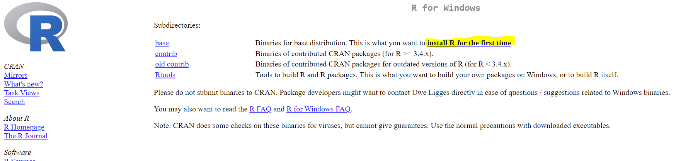
- Press “download”
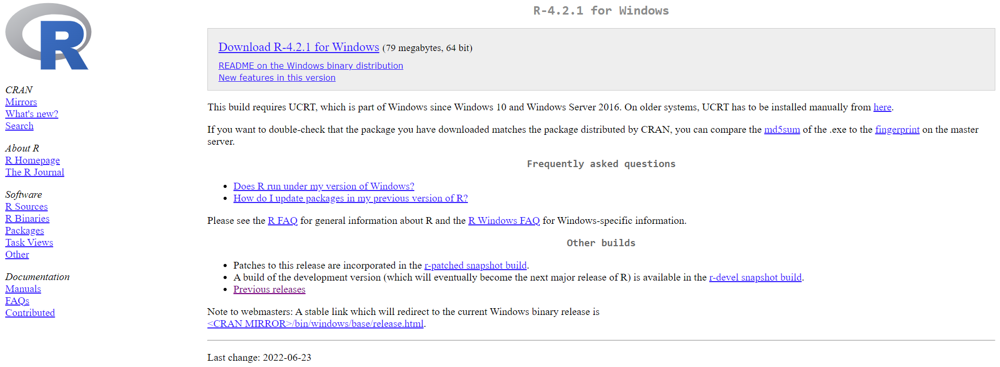
- Open installer

- Follow the prompts and leave all options set as their default values
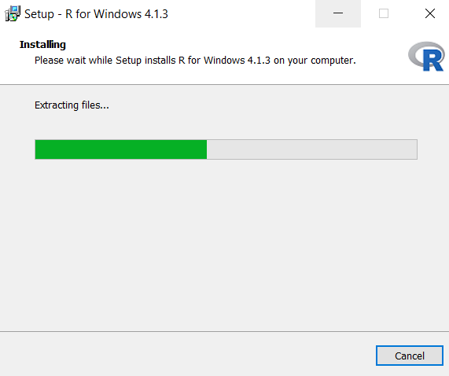
3.2 Install R Studio
After you install R, you’ll need an environment to write and run your code in. Most people use a program called “R Studio” for this. To download R Studio follow the steps listed below:
Navigate to the R Studio download site: Download the RStudio IDE
Press the “download” button under RStudio Desktop
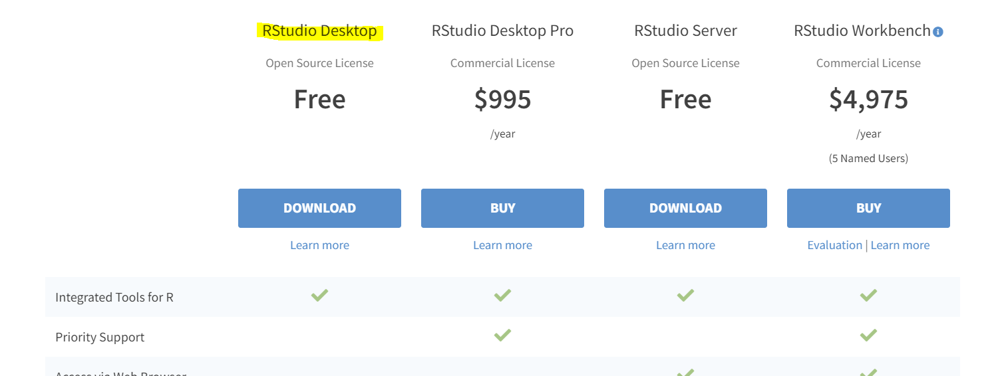
- Choose the download option for your operating system
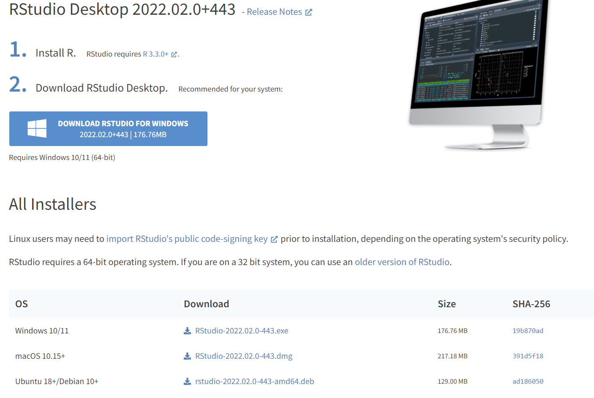
- Open the installer and accept all defaults

3.3 Alternatives
3.3.1 R Studio Cloud
R Studio Cloud offers users a way to replicate the full R Studio experience without having to download or set anything up on your personal computer. You can sign up for a free account here:
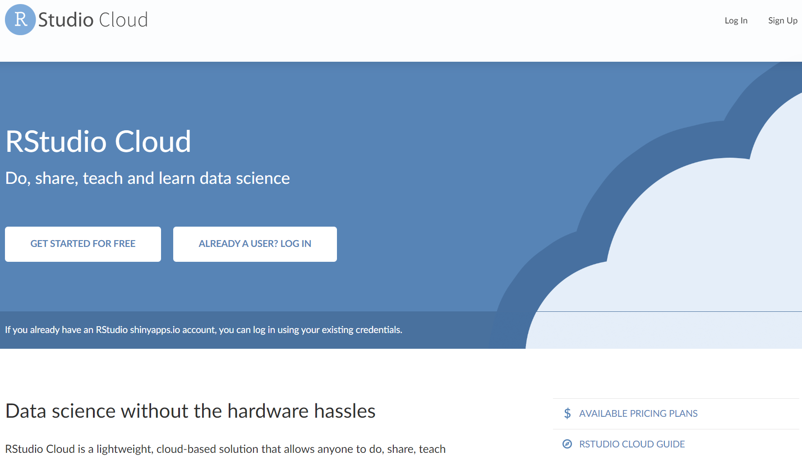
3.3.2 Replit
Replit allows users to code in 50+ languages in the browser. While you won’t be able to follow along with the R Studio specific examples, you will be able to run R code. You can sign up for a free account here:
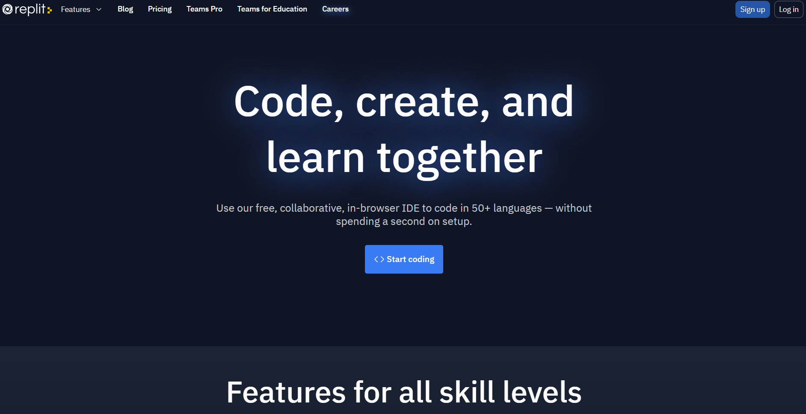
3.3.3 Kaggle
Kaggle is one of the most popular sites for data analysts to compete in data competitions, find data, and discuss data topics. They also have a feature that allows you to write and run R (and Python) code. You can sign up for a free account here:
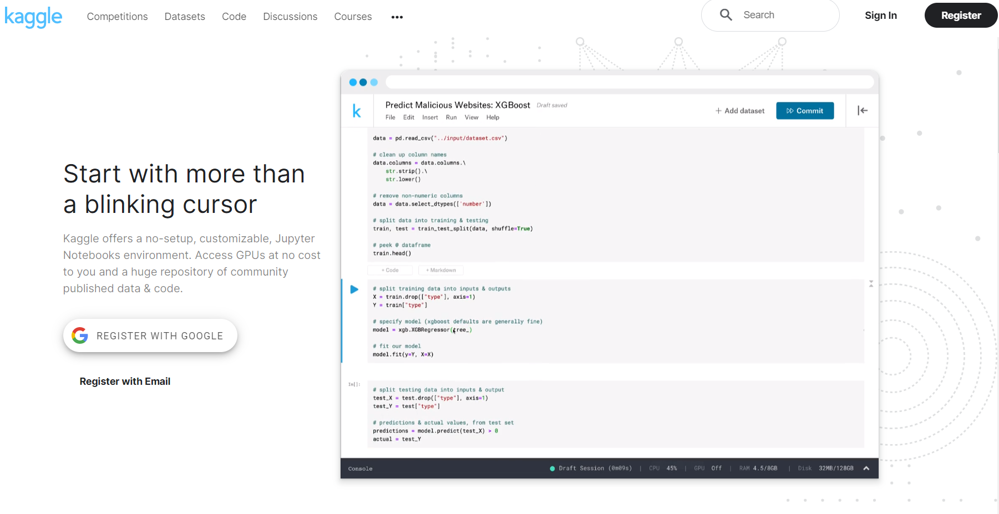
3.4 Resources
- “R Installation and Administration” by the R Core Team: https://cran.r-project.org/doc/manuals/r-release/R-admin.html